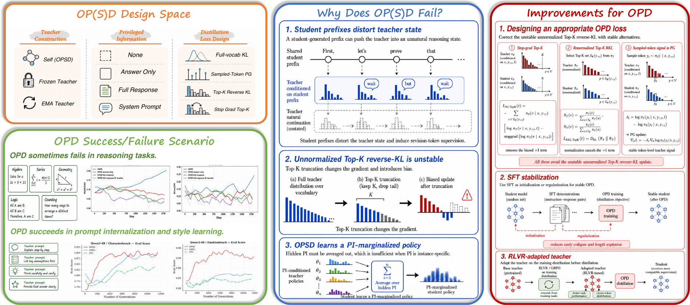
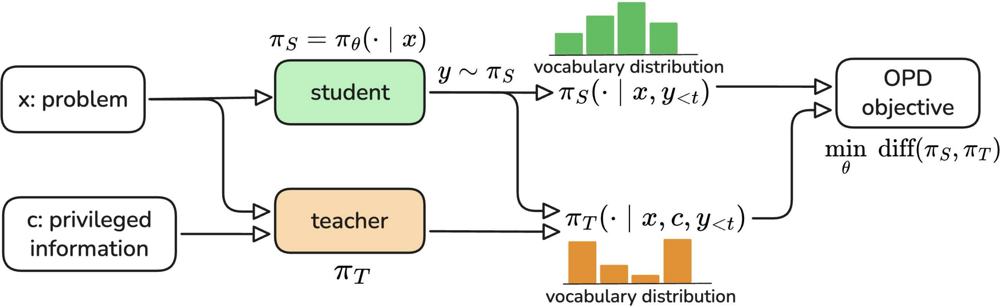
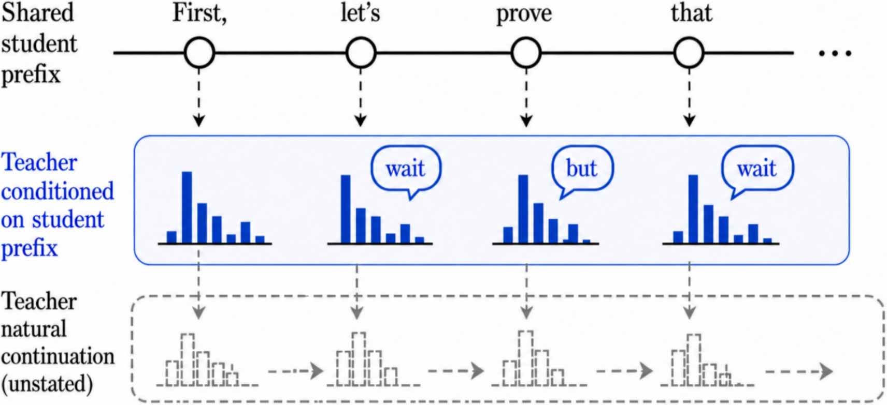
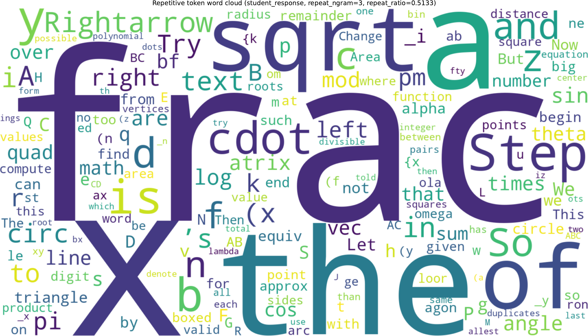
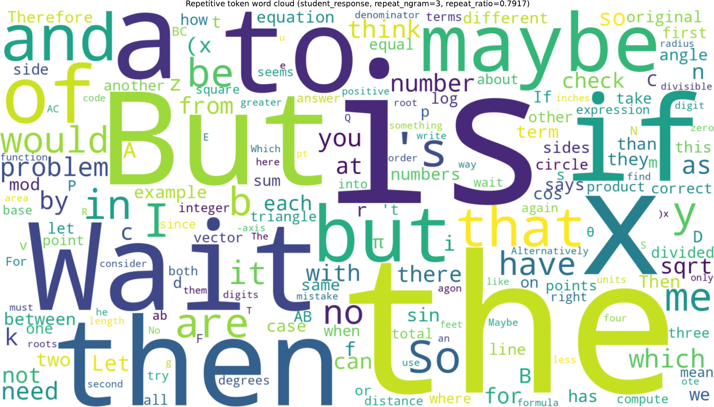
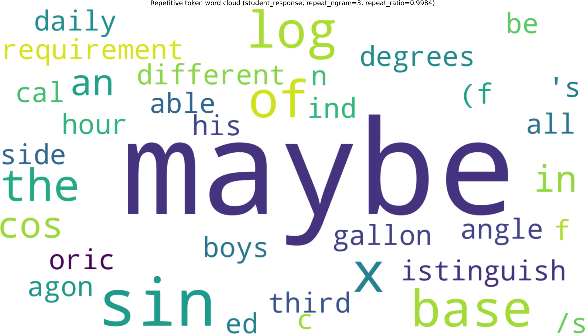
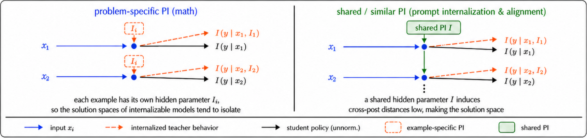

Summary
A unified look at OPD and OPSD across reasoning, prompting, and alignment.
On-policy distillation (OPD) trains a student on its own rollouts while a teacher provides dense token-level supervision. Reported results have been inconsistent — some papers see big wins, others see collapse. We run side-by-side experiments to map where each variant succeeds and where it fails, isolate the failure modes, and offer concrete fixes that restore stability.

Background
OPD vs. OPSD in one breath.
Both methods sample trajectories from the student and ask a teacher to score them token-by-token; they differ only in where the teacher comes from. In OPD, the teacher is a separate, typically larger model, and privileged information (PI) is optional — the promise is a cheap way to transfer capability into a smaller student. In OPSD, the teacher is the student itself, conditioned on extra information the student does not see at test time: a ground-truth answer, a system prompt, or a preference rule. The same loss; very different inductive biases.

Results
Where each method lands.
Across the regimes we study, OPSD's success tracks one feature of the privileged information: whether it encodes a shared latent rule across examples, or an instance-specific answer. OPD on math reasoning is sensitive to teacher choice and loss formulation; OPSD on math reasoning fails for a deeper structural reason.
OPSD on math reasoning
Per-question PI varies from problem to problem, pushing the student toward a marginal, PI-free policy that no individual teacher endorses.
OPD on math reasoning
Initial gains, then collapse: rollouts grow long, fill with hedging tokens, and accuracy crashes near zero.
System-prompt internalization
A fixed prompt acts as a shared rule. OPSD compresses prompted behavior into the model with no accuracy loss.
Style alignment
On CharacterBench and EmotionBench, OPSD converges faster than GRPO and PPO at matched sampling budgets.
Why it breaks
Three mechanisms behind the failures.
Student prefixes distort the teacher
Teacher tokens are scored on partial trajectories the student wrote. Conditioned on a committed-to branch the teacher would never have chosen, it tends to emit revision tokens — "wait", "but" — that pull the trajectory sideways instead of forward, producing local semantic conflict.
Top-K reverse-KL has a biased gradient
Truncating reverse-KL to the top-K vocabulary keeps memory tractable but breaks a cancellation that holds for the full vocabulary. A spurious +1 term survives, so a token is only pushed up if the teacher gives it more than e× the student's mass — smaller margins are silently suppressed.
∇LtopK-RKL ∝ Σ πS(v) · [ log(πS/πT) + 1 ] · ∇log πS(v)
OPSD only learns the PI-free margin
The student never sees PI, so the optimum it is pushed toward is the geometric mean across PI-conditioned teachers. When PI varies per problem, those teachers prescribe incompatible behaviors, and the consensus is weaker than any of them.

A look at collapse: hedging tokens take over.
Under unnormalized Top-20 reverse KL, training is initially fine and then deteriorates around step 700: rollouts lengthen, fillers spike, and by step 1000 the model is near-deterministically producing "maybe".



Why PI structure is the deciding factor.

What to do
Three fixes that recover stability.
Stop-gradient Top-K KL
Stop gradients on the student log-prob inside the loss, leaving only the teacher–student log-ratio as an advantage-like weight. The biased +1 term disappears and training stays stable. Renormalizing within the Top-K set is a comparable alternative.
RLVR-adapt the teacher first
Run RL with verifiable rewards on the teacher before distilling. A 1.7B model lifted by GRPO is a better OPD teacher than an out-of-the-box 8B — closer in distribution to the student even at similar accuracy, so its token-level signals fit the student's prefixes.
SFT-warm the student
When the student emits malformed or off-language tokens, the teacher cannot give meaningful feedback. A short SFT pass on teacher-generated traces reins in the output space, stabilizes response length, and lets the subsequent OPD phase improve accuracy instead of collapsing.
Takeaways
Design checklist for on-policy distillation.
- Match PI to task structure. Use OPSD when the privileged information encodes a shared rule (system prompt, alignment preference). Avoid it when PI is per-instance, like a problem's gold answer.
- Pick teachers by distribution closeness, not benchmark score. A weaker but on-distribution teacher often distills better than a stronger but distant one.
- Treat Top-K reverse-KL with care. The unnormalized form has a hidden bias; use stop-gradient or renormalized variants, or move the signal into a policy-gradient form.
- Stabilize the student before distilling. A short SFT pass keeps on-policy samples in regions where teacher feedback is informative.
- Watch for collapse signatures. Rising "wait" / "maybe" / "but" frequency and a falling teacher–student overlap ratio precede full degeneration; intervene early.